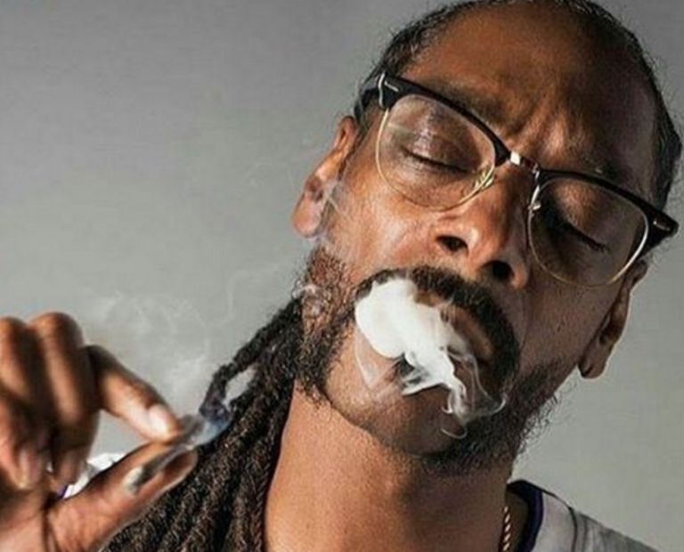

New TV Show Just Snoop Dogg getting High and Doing The Dishes
March 2, 2018

LOS ANGELES- MTV plans to release a new pilot episode for their exciting new TV show in which America can tune in and watch rapper Snoop Dogg do dishes whilst high. While there is very little dialogue in the show, test audiences have enjoyed Snoop Dogg chuckling to himself about something funny he thought about or getting very emotional about a memorable piece of dishware. Occasionally Snoop will explain that the water might be too hot, or maybe too cold. He explains "sometimes it's hard to tell whether the water I use to rinse the dishes is too hot or too cold, because sometimes when water gets very cold it can feel like it's burning my skin."